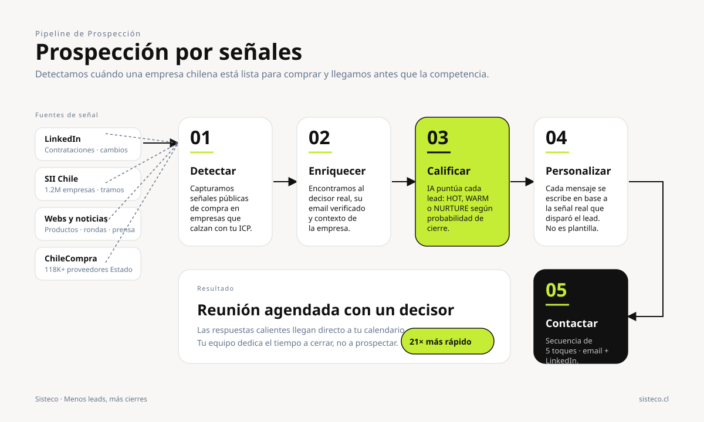
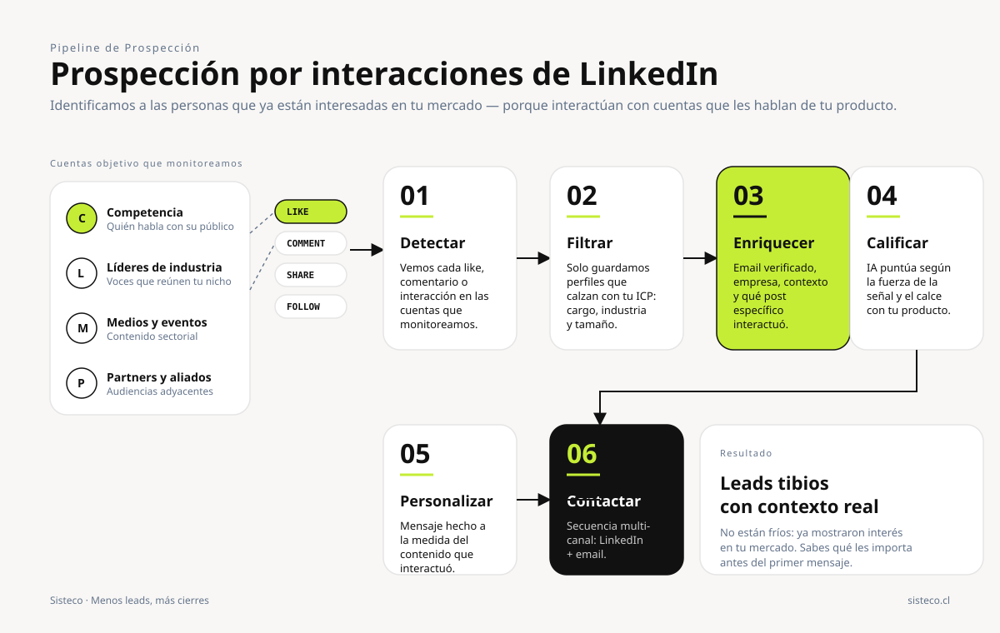
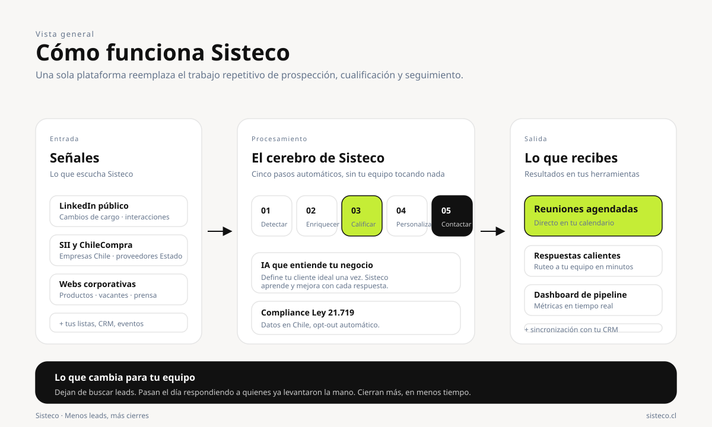
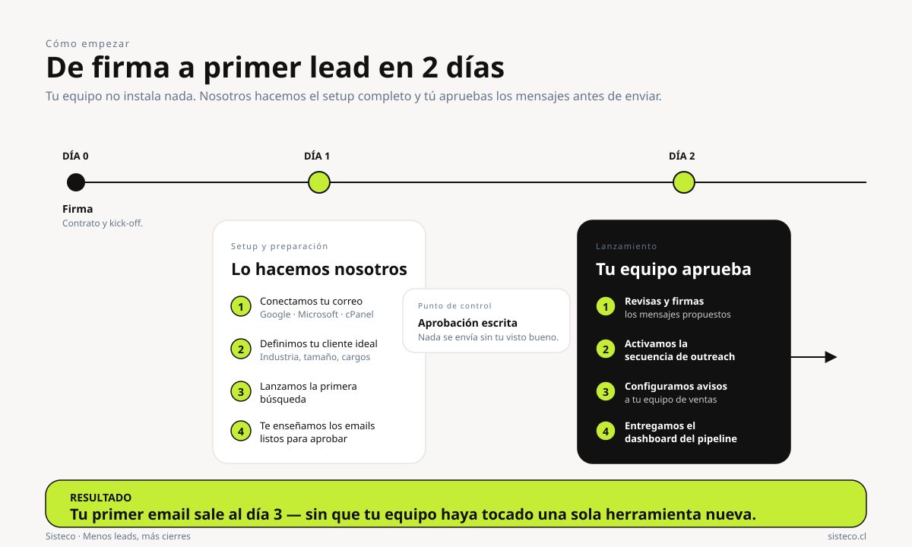
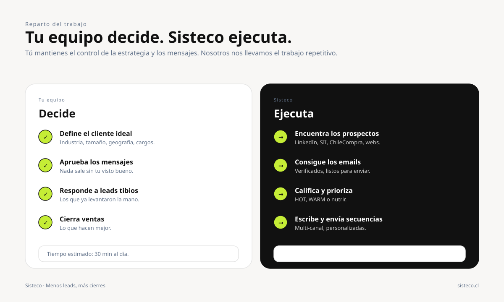

Set de 5 diagramas SVG listos para insertar en cualquier página de la landing. Identidad visual Sisteco (lime #c5ed36, fondo warm white, tipografías Sharp Grotesk + Hanken Grotesk).
Pipeline de 5 etapas que detecta empresas chilenas con señales de compra y las convierte en reuniones agendadas. Recomendado para la página Cómo funciona y la sección hero de Soluciones → Automatización de prospección.

Pipeline complementario: detectamos perfiles que dan like, comentan o interactúan con cuentas objetivo (competencia, líderes de industria, medios) y los convertimos en leads tibios con contexto. Recomendado para la página Soluciones o un bloque dedicado en Cómo funciona.

Vista de tres carriles (Señales → Procesamiento → Salida) que explica Sisteco end-to-end sin tecnicismos. Pensado para el hero de Cómo funciona o un bloque temprano en la home.

Timeline horizontal Día 0 → Día 1 → Día 2 que muestra qué hace Sisteco y qué tiene que aprobar el cliente. Diseñado para reducir la fricción del visitante mostrando que el setup no requiere trabajo técnico de su lado. Recomendado para la página Precios o Agendar demo.

Comparación en dos columnas. Reduce la objeción "esto va a darle más trabajo a mi equipo" mostrando explícitamente que lo único que hacen es decidir y aprobar. Recomendado para la sección de cierre antes del CTA de demo.
